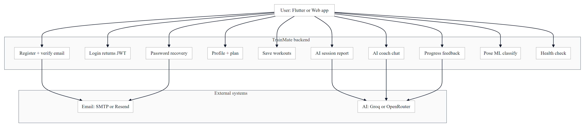
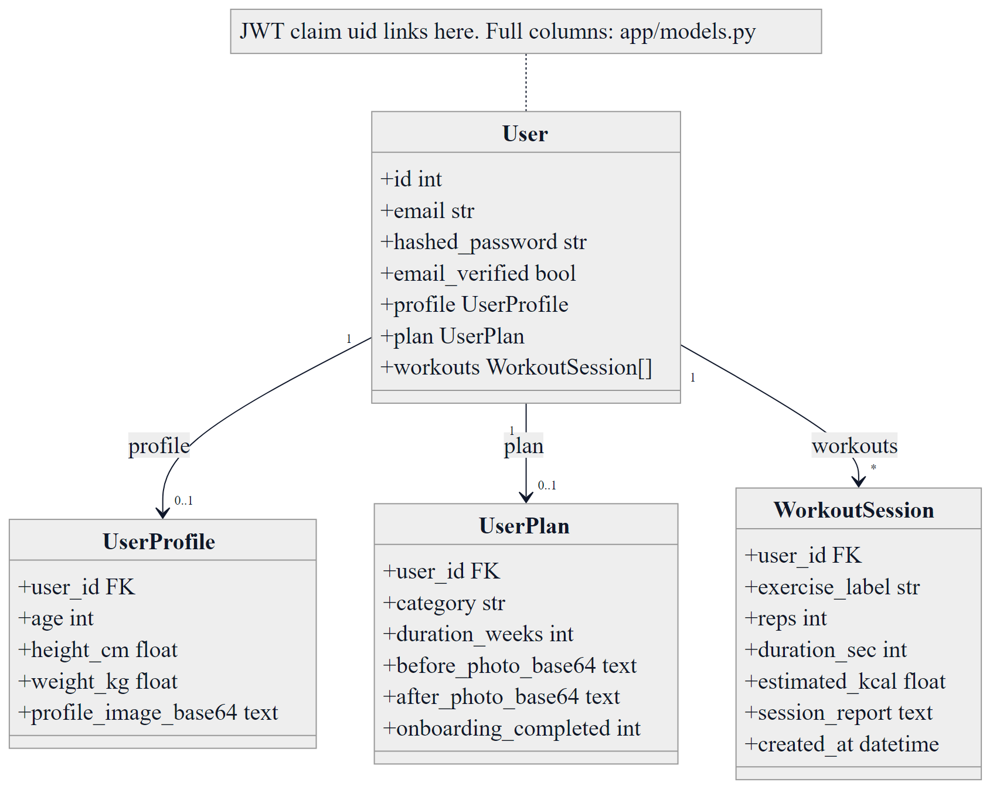
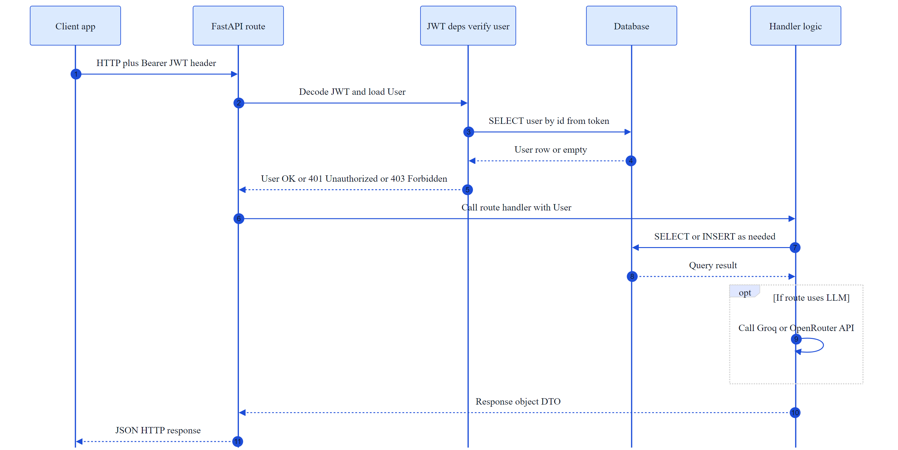
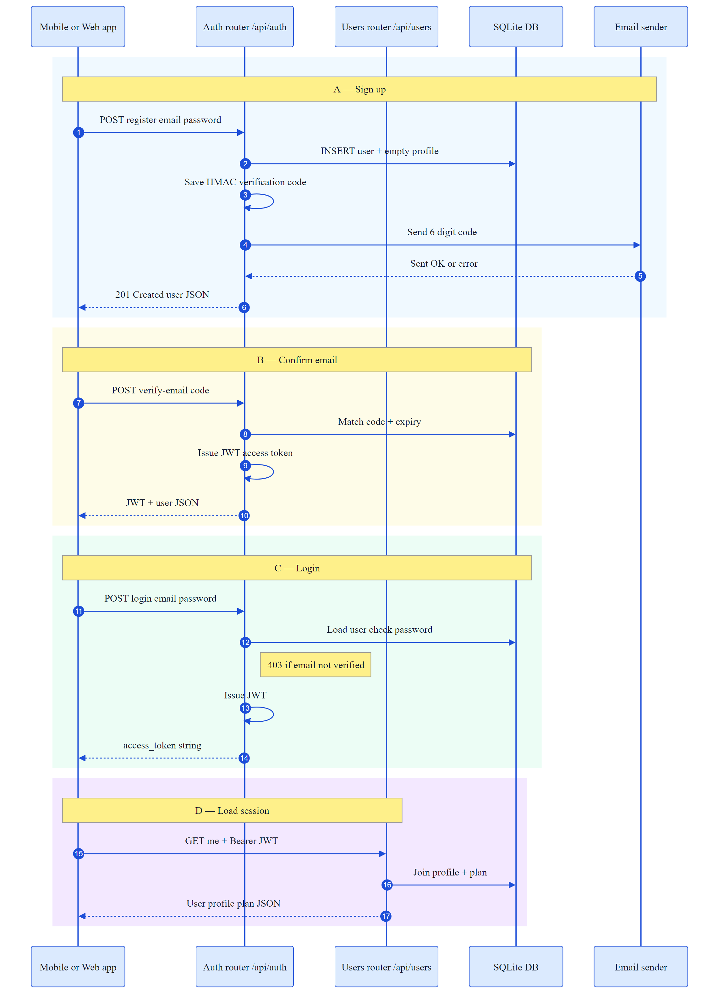
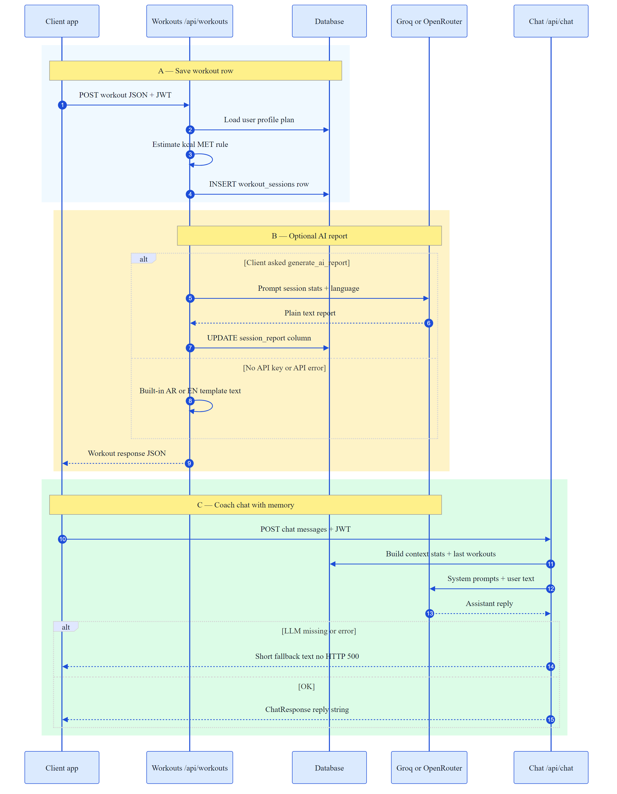

Architecture, data model, API surface, embedded PNG diagrams (works offline), plus optional live Mermaid SVG when JavaScript is enabled.
/api. Protected routes use JWT Bearer tokens.sqlite:///./trainmate.db — override with DATABASE_URL.openai client) as optional provider./api/ml/classify when model files exist under ai/models/ or ML_MODELS_DIR..venv\Scripts\activate
pip install -r requirements.txt
copy .env.example .env
uvicorn app.main:app --reload --host 0.0.0.0 --port 8000Health check: GET http://127.0.0.1:8000/api/health
Actors: mobile/web client, mail provider, LLM providers. PNG charts below use large type (~22px), dark navy lines, and 2.5× scale export so labels and arrows stay readable.

docs/diagrams/01-use-case.mmd (mmdc … -s 2.5 -w 2400).Live diagram (same source as PNG):
%%{init: {
"theme": "neutral",
"themeVariables": {
"fontSize": "22px",
"fontFamily": "Segoe UI, Arial, Helvetica, sans-serif",
"primaryTextColor": "#0f172a",
"primaryColor": "#f1f5f9",
"lineColor": "#0f172a",
"secondaryColor": "#cbd5e1",
"tertiaryColor": "#e2e8f0",
"clusterBkg": "#f8fafc",
"clusterBorder": "#334155",
"edgeLabelBackground": "#ffffff",
"mainBkg": "#ffffff",
"textColor": "#0f172a"
},
"flowchart": {
"curve": "basis",
"padding": 28,
"nodeSpacing": 70,
"rankSpacing": 95,
"diagramPadding": 20,
"htmlLabels": true
}
}}%%
flowchart TB
User["User: Flutter or Web app"]
subgraph EXT ["External systems"]
direction LR
Mail["Email: SMTP or Resend"]
AI["AI: Groq or OpenRouter"]
end
subgraph BE ["TrainMate backend"]
direction TB
R["Register + verify email"]
L["Login returns JWT"]
P["Password recovery"]
Prof["Profile + plan"]
W["Save workouts"]
Rep["AI session report"]
Chat["AI coach chat"]
Prog["Progress feedback"]
Ml["Pose ML classify"]
H["Health check"]
end
User --> R
User --> L
User --> P
User --> Prof
User --> W
User --> Rep
User --> Chat
User --> Prog
User --> Ml
User --> H
R --> Mail
P --> Mail
Rep --> AI
Chat --> AI
Prog --> AI
Edges use the same stroke color as text (#0f172a) so arrows stay visible on white.

app/models.py. Regenerate: mmdc … -s 2.5 -w 2800.Live diagram:
%%{init: {
"theme": "neutral",
"themeVariables": {
"fontSize": "20px",
"fontFamily": "Segoe UI, Arial, Helvetica, sans-serif",
"primaryTextColor": "#0f172a",
"lineColor": "#0f172a",
"textColor": "#0f172a",
"classText": "#0f172a",
"classBox": "#eff6ff",
"classBoxBorder": "#1d4ed8",
"noteTextColor": "#0f172a",
"noteBkgColor": "#fef9c3"
},
"class": {
"hideEmptyMembersBox": false
}
}}%%
classDiagram
direction TB
class User {
+id int
+email str
+hashed_password str
+email_verified bool
+profile UserProfile
+plan UserPlan
+workouts WorkoutSession[]
}
class UserProfile {
+user_id FK
+age int
+height_cm float
+weight_kg float
+profile_image_base64 text
}
class UserPlan {
+user_id FK
+category str
+duration_weeks int
+before_photo_base64 text
+after_photo_base64 text
+onboarding_completed int
}
class WorkoutSession {
+user_id FK
+exercise_label str
+reps int
+duration_sec int
+estimated_kcal float
+session_report text
+created_at datetime
}
User "1" --> "0..1" UserProfile : profile
User "1" --> "0..1" UserPlan : plan
User "1" --> "*" WorkoutSession : workouts
note for User "JWT claim uid links here. Full columns: app/models.py"
| Layer | Role |
|---|---|
app/routers/*.py | HTTP routes: auth, users, workouts, chat, ml |
app/schemas.py | Pydantic request/response models |
app/security.py | bcrypt, JWT, HMAC for email codes |
app/deps.py | get_current_user from Bearer token |
app/config.py | Environment settings (.env) |
app/email_delivery.py | SMTP / Resend sending |
app/verification.py | Code issuance & resend cooldowns |

docs/diagrams/03-sequence-protected.mmd.Live diagram:
%%{init: {
"theme": "neutral",
"themeVariables": {
"fontSize": "20px",
"fontFamily": "Segoe UI, Arial, Helvetica, sans-serif",
"actorBkg": "#dbeafe",
"actorBorder": "#1d4ed8",
"actorTextColor": "#0f172a",
"signalColor": "#1d4ed8",
"signalTextColor": "#0f172a",
"labelBoxBkgColor": "#e0e7ff",
"labelTextColor": "#0f172a",
"loopTextColor": "#0f172a",
"noteBkgColor": "#fef08a",
"noteTextColor": "#0f172a",
"activationBorderColor": "#1d4ed8",
"activationBkgColor": "#bfdbfe",
"sequenceNumberColor": "#0f172a"
},
"sequence": {
"actorFontSize": 19,
"noteFontSize": 17,
"messageFontSize": 18,
"boxMargin": 14,
"boxTextMargin": 8,
"mirrorActors": false,
"bottomMarginAdj": 18,
"showSequenceNumbers": false
}
}}%%
sequenceDiagram
autonumber
participant C as Client app
participant API as FastAPI route
participant JWT as JWT deps verify user
participant DB as Database
participant X as Handler logic
C->>API: HTTP plus Bearer JWT header
API->>JWT: Decode JWT and load User
JWT->>DB: SELECT user by id from token
DB-->>JWT: User row or empty
JWT-->>API: User OK or 401 Unauthorized or 403 Forbidden
API->>X: Call route handler with User
X->>DB: SELECT or INSERT as needed
DB-->>X: Query result
opt If route uses LLM
X->>X: Call Groq or OpenRouter API
end
X-->>API: Response object DTO
API-->>C: JSON HTTP response
Registration sends a verification email; after verification or login, the client calls GET /api/users/me with the JWT.

04-sequence-auth.mmd.Live diagram:
%%{init: {
"theme": "neutral",
"themeVariables": {
"fontSize": "19px",
"fontFamily": "Segoe UI, Arial, Helvetica, sans-serif",
"actorBkg": "#dbeafe",
"actorBorder": "#1d4ed8",
"actorTextColor": "#0f172a",
"signalColor": "#1d4ed8",
"signalTextColor": "#0f172a",
"noteBkgColor": "#fef08a",
"noteTextColor": "#0f172a",
"labelBoxBkgColor": "#e0e7ff",
"labelTextColor": "#0f172a"
},
"sequence": {
"actorFontSize": 18,
"noteFontSize": 17,
"messageFontSize": 17,
"boxMargin": 16
}
}}%%
sequenceDiagram
autonumber
participant App as Mobile or Web app
participant Auth as Auth router /api/auth
participant Users as Users router /api/users
participant DB as SQLite DB
participant Mail as Email sender
rect rgb(240, 249, 255)
Note over App, Mail: A — Sign up
App->>Auth: POST register email password
Auth->>DB: INSERT user + empty profile
Auth->>Auth: Save HMAC verification code
Auth->>Mail: Send 6 digit code
Mail-->>Auth: Sent OK or error
Auth-->>App: 201 Created user JSON
end
rect rgb(254, 252, 232)
Note over App, DB: B — Confirm email
App->>Auth: POST verify-email code
Auth->>DB: Match code + expiry
Auth->>Auth: Issue JWT access token
Auth-->>App: JWT + user JSON
end
rect rgb(236, 253, 245)
Note over App, DB: C — Login
App->>Auth: POST login email password
Auth->>DB: Load user check password
Note right of Auth: 403 if email not verified
Auth->>Auth: Issue JWT
Auth-->>App: access_token string
end
rect rgb(243, 232, 255)
Note over App, Users: D — Load session
App->>Users: GET me + Bearer JWT
Users->>DB: Join profile + plan
Users-->>App: User profile plan JSON
end
Notes: get_current_user rejects missing/invalid tokens and users with email_verified = false. Changing email via PATCH /api/users/me/account may set pending_email and trigger another verification flow.

05-sequence-workout-chat.mmd.Live diagram:
%%{init: {
"theme": "neutral",
"themeVariables": {
"fontSize": "19px",
"fontFamily": "Segoe UI, Arial, Helvetica, sans-serif",
"actorBkg": "#dbeafe",
"actorBorder": "#1d4ed8",
"actorTextColor": "#0f172a",
"signalColor": "#1d4ed8",
"signalTextColor": "#0f172a",
"noteBkgColor": "#fef08a",
"noteTextColor": "#0f172a",
"labelBoxBkgColor": "#e0e7ff",
"labelTextColor": "#0f172a"
},
"sequence": {
"actorFontSize": 18,
"noteFontSize": 17,
"messageFontSize": 17,
"boxMargin": 16
}
}}%%
sequenceDiagram
autonumber
participant App as Client app
participant WO as Workouts /api/workouts
participant DB as Database
participant AI as Groq or OpenRouter
participant Chat as Chat /api/chat
rect rgb(240, 249, 255)
Note over App, DB: A — Save workout row
App->>WO: POST workout JSON + JWT
WO->>DB: Load user profile plan
WO->>WO: Estimate kcal MET rule
WO->>DB: INSERT workout_sessions row
end
rect rgb(254, 243, 199)
Note over WO, AI: B — Optional AI report
alt Client asked generate_ai_report
WO->>AI: Prompt session stats + language
AI-->>WO: Plain text report
WO->>DB: UPDATE session_report column
else No API key or API error
WO->>WO: Built-in AR or EN template text
end
WO-->>App: Workout response JSON
end
rect rgb(220, 252, 231)
Note over App, AI: C — Coach chat with memory
App->>Chat: POST chat messages + JWT
Chat->>DB: Build context stats + last workouts
Chat->>AI: System prompts + user text
AI-->>Chat: Assistant reply
alt LLM missing or error
Chat-->>App: Short fallback text no HTTP 500
else OK
Chat-->>App: ChatResponse reply string
end
end
Also available: POST /api/chat/progress-feedback?lang= for short progress summaries using the same provider selection and fallbacks.
| Component | Technology | Purpose |
|---|---|---|
| Web framework | FastAPI | REST, validation, OpenAPI |
| Server | Uvicorn | ASGI process |
| ORM | SQLAlchemy 2 | Models & sessions |
| Auth | python-jose, bcrypt | JWT HS256, password hashing |
| Settings | pydantic-settings | .env loading |
| AI | groq, openai SDK | Reports, chat, progress feedback |
| CORS | Starlette middleware | Cross-origin clients |
| SMTP / Resend HTTP | Verification & reset | |
| Optional ML | tensorflow-cpu, joblib, numpy | /api/ml/classify |
Routers mounted in app/main.py: /api/auth, /api/users, /api/workouts, /api/chat, /api/ml, plus /api/health.
Base.metadata.create_all(bind=engine) ensures tables exist._ensure_sqlite_columns() adds missing columns on SQLite for older DB files (lightweight migrations without Alembic).session_report.get_db() yields one SQLAlchemy session per request and closes it in a finally block — standard FastAPI pattern.
app/config.py)JWT_SECRET_KEY, JWT_ALGORITHM, ACCESS_TOKEN_EXPIRE_MINUTESDATABASE_URLGROQ_API_KEY, GROQ_MODEL, LLM_PROVIDER, OPENROUTER_*SMTP_* or RESEND_API_KEYEXPOSE_VERIFICATION_CODES (dev convenience)ML_MODELS_DIR (optional path to Keras artifacts)| Method | Path | Auth | Purpose |
|---|---|---|---|
| GET | /api/health | No | Status, email & LLM flags |
| POST | /api/auth/register | No | Sign up + send verification |
| POST | /api/auth/login | No | JWT after verified email |
| POST | /api/auth/verify-email | No | Complete verification + JWT |
| POST | /api/auth/resend-verification | No | Resend code |
| POST | /api/auth/forgot-password | No | Request reset code |
| POST | /api/auth/reset-password | No | Set new password |
| GET | /api/users/me | Bearer | User + profile + plan |
| PATCH | /api/users/me/profile | Bearer | Update profile |
| PATCH | /api/users/me/account | Bearer | Name, phone, email, password |
| PATCH | /api/users/me/plan | Bearer | Plan & photos |
| POST | /api/workouts | Bearer | Create session + optional AI report |
| GET | /api/workouts | Bearer | List recent workouts |
| POST | /api/chat | Bearer | Coach chat with user context |
| POST | /api/chat/progress-feedback | Bearer | Short progress blurb |
| GET | /api/ml/status | No | Model files present? |
| POST | /api/ml/classify | Bearer | Pose window classification |
LLM_PROVIDER=auto prefers OpenRouter when a key exists; otherwise Groq.